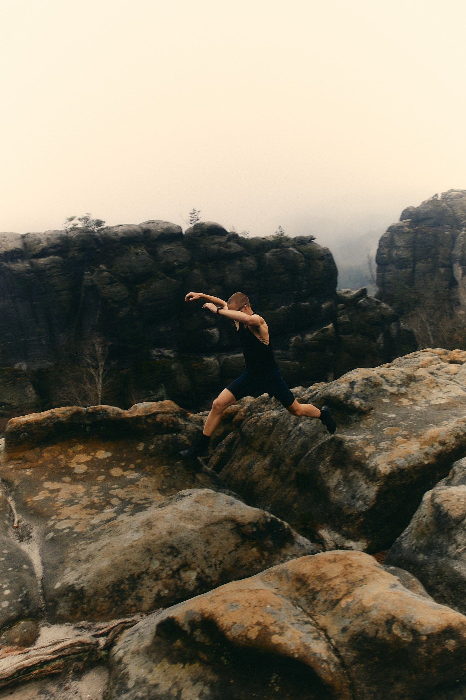
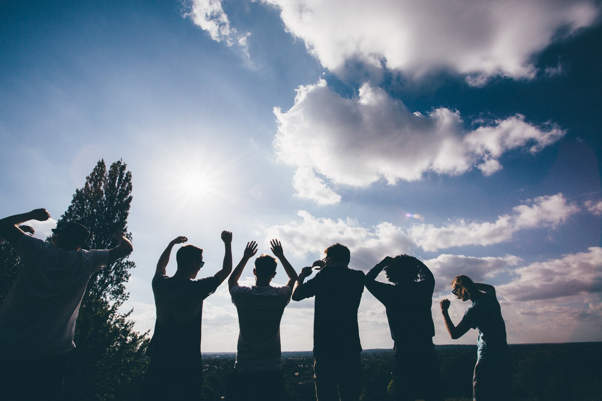
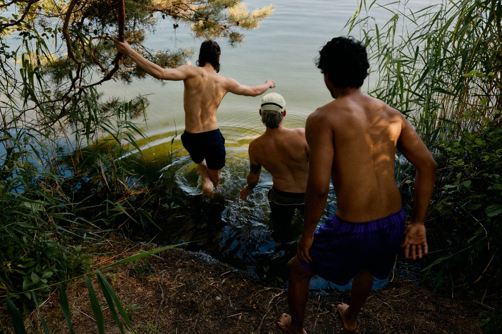

Два часа в кругу мужчин, где не советуют, не оценивают и не чинят. Говоришь то, что живо — или молчишь и слушаешь. Каждое воскресенье в SOL, Nuanu.
С женой — не всё. С друзьями — смешки и подъёбы. С терапевтом — по расписанию, сорок пять минут раз в неделю.
Мы умеем решать, держать структуру, отвечать за всех. А то, что происходит внутри, складывается в дальний ящик с табличкой «потом». И «потом» не наступает — потому что каждый день надо снова решать и снова тащить.
Круг — это два часа, когда ящик можно открыть. Не чтобы разобрать себя по частям, а чтобы услышать вслух то, что давно живёт молча. И заметить, что рядом сидят такие же.
Короткая телесная разминка, чтобы спуститься из головы в тело и перестать держать лицо.
Нарративная практика: каждый говорит то, что живо прямо сейчас. По минуте, заходить можно сколько угодно раз.
Второй заход — тот же формат, но через вопрос «чего мне хочется». Часто именно здесь и вскрывается.
За что я благодарен себе и что забираю с собой. Возвращение в свою реальность.
Не советуем. Никаких коучинговых вопросов и поучительных историй.
Не спорим. Говорим не собеседнику, а в центр — в общий костёр.
Всё остаётся здесь. Можно рассказывать, какие охуенные мужские круги. Что на них происходит — не рассказываем.
Прийти без опыта, без запроса и без понимания, зачем ты здесь. Молчать весь круг и просто слушать — многие так заходят в первый раз. Прийти в тяжёлом состоянии. Привести друга.
«Даже мой психолог не всё знает. А тут половина — незнакомые мне люди, и я поделился. Оказывается, я могу взять и кому-то рассказать»

«Уязвимость — это тоже поддержка. Уязвимость — это тоже сила. И уязвимость — это ещё и вектор»
«Благодарен, что смог почти в каждом увидеть свои переживания. И вам, мужчины, — за ощущение, что я не один»
«Ощущение братства: ты не один, как тебе кажется, в этой жопе»
«Чувство лёгкости после шеринга — как топливо, на котором можно ехать дальше»
Параллельно с мужским идёт женский круг — его ведёт Оля Маркес. После оба круга встречаются в бане в Lumeria и продолжают вечер вместе.
Nuanu большой, внутри перемещение на электрокарах — приезжай минут за пятнадцать, чтобы спокойно дойти.


Прочитаны правильные книги, есть терапевт — а внутри ничего не двигается.
Столько всего произошло — а рассказать уже некому.
Даже среди своих весь вечер предъявляешь версию себя — и домой едешь с ощущением, что тебя там не было.
Без повода, без кризиса. Побыть в комнате, где не надо ничем меряться.
За круг. Тем, кто был на ретритах VAHUE — Куприянов, Пема и другие — есть клубный прайс: скажи об этом при записи.
Каждую среду в 16:00 мск мы проводим открытый мужской круг в зуме — час, до двадцати человек, без оплаты. Тот же формат, только онлайн.
Можно молчать и просто слушать — многие так заходят в первый раз. Можно привести друга. Можно прийти в состоянии, которое ты сам себе объяснить не можешь.